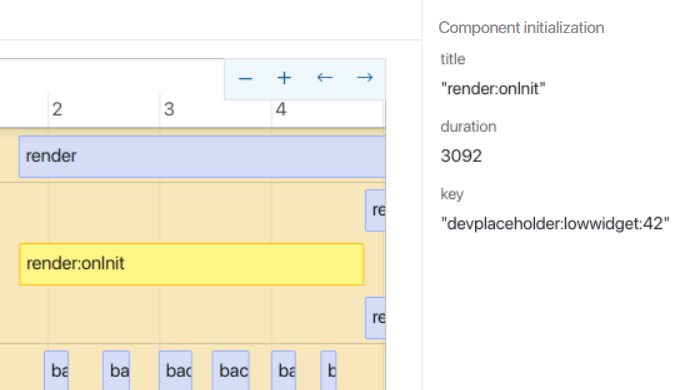
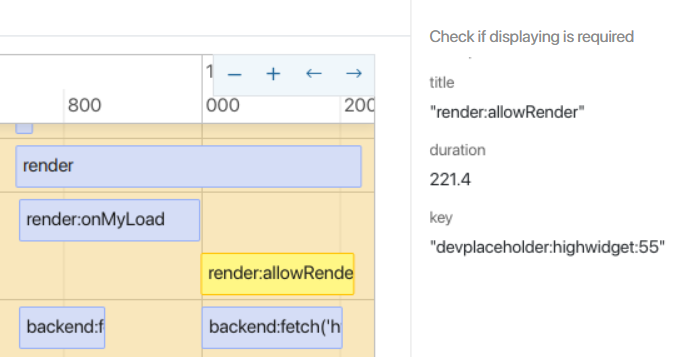
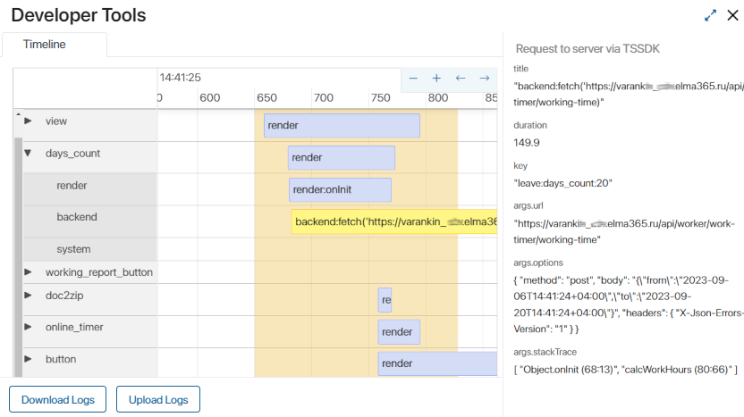

This report allows diagnosing the execution of scripts for custom widgets, forms, and pages in terms of their performance. You can pinpoint why a page might be hanging or an app item page takes a long time to open.
Use the report both in debugging mode when creating interface elements and after their publication.
Users who have been granted access rights on the Administration > Developer Tools page can work with this report. To do so, select users in the Widget Debugging section.
If you have access, you can go to the report on any system page opened in the browser. To do this, click the button in the bottom right corner of the page and select Developer Tools. For convenience, the button can be moved up.
Note that if you have access to the report, all actions and events on the current page are recorded from the moment you navigate to it or from when the page is refreshed. If there's no access, events are not logged.
Working with the Developer Tools report
The system administrator can check the execution of scripts for custom widgets, forms, and pages in terms of their performance. To do this:
- Open the page, task, or app item page whose action you need to analyze.
- Reload the current page to clear the history of previous actions and events.
- Perform the action you want to diagnose. For instance, open an app item page if this action takes a long time.
- Click on and select the Developer Tools option. The corresponding report will open.
- Analyze the report data.
- Repeat steps 2-5 to rule out factors like server or network load, user PC processor load, etc.
- If you repeatedly see a long load time and execution for specific events on a single interface element, this is a basis for code optimization. In the interface designer, go to the widget settings, analyze the scripts, and make changes to them.
If you've received a text log file from a user to analyze a performance issue on their system page, upload it to the report. To do this, on the report page, click Upload Logs and then attach the received log file. The file's contents will be displayed in the report.
You can also download the log file from the report to your PC by clicking Download Logs on the report page.
Content of the Developer Tools report
The report contains data about events that occurred from the time the page was refreshed in the browser or navigated to until the time you opened the report. Read about how to access the report and which preliminary actions to take in order to gather the necessary analysis in the Working with the Developer Tools report section.
The left column displays a list of custom widgets that were loaded while displaying the page, app form, or task page. System widgets are not displayed in the report. Hovering over an interface element's name will show its full system name.
The report also includes the following information:
- Timeline. Allows you to determine the duration of events in milliseconds or seconds. You can adjust the scale and view earlier or later events. The yellow highlight indicates the period from the moment an action was called to the moment its result was displayed. For example, if a user clicked on an app element and its card was displayed after one second, this period would be highlighted. In the report's left column, you'll see all the widgets that were loaded for display on the page.
- Events. These correspond to a specific interface element and are positioned to its right as segments along the timeline. The longer the segment, the longer the event lasted. Click on a segment to display detailed event information on the report's side panel. Pay attention to the duration metric, which represents the event's duration in milliseconds.
If in Administration > Developer Tools, tracing is enabled for the component to which the event relates, you can analyze the execution of server scripts included in it. This helps you evaluate the execution speed of individual functions to optimize the script and identify the causes of errors. Select a segment with a server script on the scale and click Go to Trace in the sidebar. Read more about tracing settings and trace information in the Trace server scripts article. - Groups of events. Expanding the interface element row reveals three groups of events that occurred during this element's loading:
- render. User-side events on their browser page;
- backend. Sending requests to the server. This includes requests through TS SDK and server script calls;
- system. Events related to the display of system widgets. The user cannot influence the speed of these events. This information is for reference.
Render
Examples of the render event group displayed in the report:
- Execution of the onInit function. Most often, performance issues can be identified by analyzing data retrieval logic in this event.

- Execution of the canRender function. Server calls are rarely used here, but they might occur.

- Rendering the Code widget named getData.
Events that don't have a duration and are denoted in the report by a point, like updating a context variable during script execution:
Context.data.phones.push({ tel: '+58067700', type: PhoneType.Main });
Backend
For the backend event group, the report's side panel displays both the duration metric and the URL to which the request was sent, as well as the request's methods and keys. Examples of events:
- Server request via TS SDK.
const roles = await System.userGroups.search()
.where((f, g) => g.and(
f.__deletedAt.eq(null),
f.isRole.eq(true)
))
.size(1000)
.all();

- executing server script
await Server.rpc.LoadSkills();

System
System widgets, such as Button, Column, Modal window are displayed in the following manner:
Example of working with the Developer Tools report
Let's analyze the events that will occur if we open the Leave Request app page:
- Navigate to the app page and refresh it to reset the history of previous actions. Then, open the app item page.
- Click on in the bottom right corner of the page to open the Developer Tools report. The button to access the report is available if you have permissions under Administration > Developer Tools in the Widgets Debugging section.
- Expand the line with the days_count widget and see what events took place during its loading.
- In the backend group, one server request was executed. Click on this event to display detailed information on the right panel:
- The duration field shows a value of 163.7 ms. This is quite fast, considering there are no complex widgets on the app form.
- The args.stackTree field indicates that the corresponding method is called from the
calcWorkHours()method, which was invoked during widget initialization, in theonInit()function.
The server request is the most prolonged event in the report. Let's try optimizing the method used for this request.
- To account for measurement errors, open the app page several times and compare the results. If the operation consistently takes a long time, proceed to improve the script.
- If the days_count widget used the
awaitkey parameter, the page will only be displayed after calculating the total hours. To optimize loading, go to the widget's source code and remove theawaitparameter from thecalcWorkHours()method:
async function onInit(): Promise<void> {
...
calcWorkHours();
}
- Now, the form will load before the method finishes, but without data. As soon as the method completes and updates the context, the changes will automatically be reflected in the widget.
- Publish the widget and redo steps 1-2.

The server request event now falls outside the form loading period. This means the method executed without waiting, and the form began loading before the calcWorkHours() method finished executing.
The report also displays the worklog_report_button, online_timer, and button widgets. These are Toolbar Extension Zone widgets. They load asynchronously and do not affect the page display time.
Examples of data for optimization
Here's a brief list of other ways data is displayed in the Developer Tools report, where interface element loading optimization might be possible:
- Long duration of the render:onlnit event.
- Multiple requests in the backend group, retrieving a significant amount of data.
- Data filtering on the user's side.
- Fetching data in a loop.
- Duplicate requests.
Found a typo? Select it and press Ctrl+Enter to send us feedback